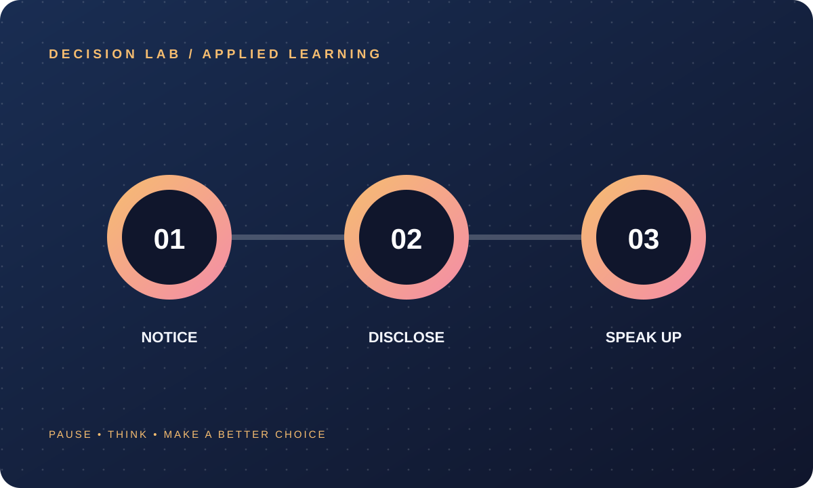

Explain how a code of conduct supports trust and sets shared expectations.
ETHICS & CULTURE / INTERACTIVE HTML COURSE
Code of Conduct & Ethics
A decision-centred course that helps people translate workplace values into respectful, fair and accountable actions.

VISUAL LEARNING EXPERIENCESHAY-ID / 02
SCROLL TO EXPLORE ↓
01 / COURSE OBJECTIVES
What you will be able to do.
By the end of this learning experience, you should be able to demonstrate these practical outcomes. Use them as a lens while you explore the chapters and make decisions.
Recognise behaviours that undermine respect, inclusion and fair treatment.
Identify potential conflicts of interest and respond through disclosure and safeguards.
Evaluate gifts, hospitality, information use and record accuracy against organisational standards.
Select appropriate ways to raise concerns and seek guidance.

02 / YOUR LEARNING MAP
Six steps. One connected journey.
Each chapter builds on the previous one, moving from awareness to a more confident workplace response.
Understand shared standards
A code is a guide to action
Practise respect and inclusion
Create a workplace where people can contribute
Recognise conflicts of interest
Recognise, disclose and manage competing interests
Handle gifts and information
Protect impartiality and trust
Speak up and seek help
Be accurate, careful and accountable
Make the principled choice
Raise concerns through appropriate channels
03 / EXPLORE THE CONTENT
Learn it. Connect it. Apply it.
Read through each chapter, examine the visual cues and consider how the ideas translate into day-to-day work.
CHAPTER 01 / START WITH SHARED STANDARDS
A code is a guide to action
A code of conduct describes the behaviours and decisions that help an organisation earn trust. It is not a document to remember word for word. It gives people a shared starting point when choices are difficult, expectations are unclear or competing interests appear. Policies provide detail; the code helps people understand the values behind those policies.
- Know where to find your organisation’s code and related policies.
- Consider the impact of a decision, not only whether it is convenient.
- Ask for guidance when facts or expectations are unclear.
DESIGN TAKEAWAY
A strong ethical choice can be explained openly and consistently.
A strong ethical choice can be explained openly and consistently.
CONCEPT / 01
CHAPTER 02 / RESPECT AND INCLUSION
Create a workplace where people can contribute
Respect is visible in everyday behaviour: how people speak, listen, share opportunities and respond to disagreement. Harassment, bullying, exclusion and retaliation can damage people and the organisation. Intent matters, but impact matters too. When a colleague raises a concern, listen without dismissing it and use the appropriate support or reporting route.
- Use respectful language and behaviour in person and online.
- Make space for different perspectives and fair participation.
- Do not retaliate against someone who raises a concern in good faith.
DESIGN TAKEAWAY
Professional respect is not optional when pressure rises.
Professional respect is not optional when pressure rises.
CONCEPT / 02
CHAPTER 03 / CONFLICTS OF INTEREST
Recognise, disclose and manage competing interests
A conflict can arise when personal, family, financial or outside interests could influence a work decision, or appear to do so. A conflict is not always misconduct. The risk grows when it is hidden or unmanaged. Disclose the situation promptly and follow the organisation’s process for review, recusal or other safeguards.
- Notice personal interests that could influence professional judgement.
- Disclose actual, potential or perceived conflicts early.
- Follow the agreed safeguard, including stepping back from a decision when required.
DESIGN TAKEAWAY
Transparency allows a potential conflict to be managed before it affects trust.
Transparency allows a potential conflict to be managed before it affects trust.
CONCEPT / 03
CHAPTER 04 / GIFTS AND BUSINESS COURTESIES
Protect impartiality and trust
Gifts, hospitality and invitations can create pressure or an appearance of influence. The appropriate response depends on the organisation’s rules, value limits, timing and business context. Be especially careful during procurement, negotiations, audits or decisions involving the giver. When uncertain, pause, disclose the offer and seek approval before accepting.
- Check policy requirements and approval limits before accepting.
- Consider timing, frequency, intent and the appearance of influence.
- Record or decline an offer when policy or context requires it.
DESIGN TAKEAWAY
A courtesy should never compromise independent judgement.
A courtesy should never compromise independent judgement.
CONCEPT / 04
CHAPTER 05 / INFORMATION AND INTEGRITY
Be accurate, careful and accountable
Ethical conduct includes protecting personal and confidential information, using organisational resources appropriately and keeping records accurate. Do not manipulate figures, omit material facts or share information with people who do not have a legitimate need. If you discover an error in a record or report, raise it and follow the correction process.
- Access and share information only for legitimate work purposes.
- Keep records complete, accurate and timely.
- Protect confidential information and report errors or misuse.
DESIGN TAKEAWAY
Trust depends on the integrity of the decisions and the records behind them.
Trust depends on the integrity of the decisions and the records behind them.
CONCEPT / 05
CHAPTER 06 / SPEAK UP AND SEEK HELP
Raise concerns through appropriate channels
Speaking up helps an organisation identify risks and address issues earlier. Concerns may relate to safety, misconduct, fraud, discrimination, data handling or pressure to break a rule. Use the channels your organisation provides, share facts rather than assumptions and ask for support when needed. A concern raised in good faith deserves to be handled respectfully.
- Use the designated manager, HR, compliance or reporting channel.
- Share what you observed, when it happened and any relevant evidence.
- Maintain confidentiality and cooperate with the appropriate process.
DESIGN TAKEAWAY
Raising a concern is a contribution to a healthier workplace.
Raising a concern is a contribution to a healthier workplace.
CONCEPT / 06
04 / DECISION LAB
What would you do next?
Use the ideas from the course in a short workplace situation. Select the response you would take and review the feedback.

WORKPLACE MOMENT / APPLY YOUR JUDGEMENT
A supplier offers you premium event tickets while your team is evaluating bids for a new contract. The supplier says it is simply a thank-you for the relationship.
Choose the most appropriate response.
05 / KNOWLEDGE CHECK
Make the learning stick.
Answer five questions to check your understanding. Submit when you are ready to see your score and review the explanations.
YOUR NEXT STEP
Take the idea
into your work.
Choose one action from this course to apply in your next relevant task or conversation. Learning becomes valuable when it changes what we notice, decide or do.